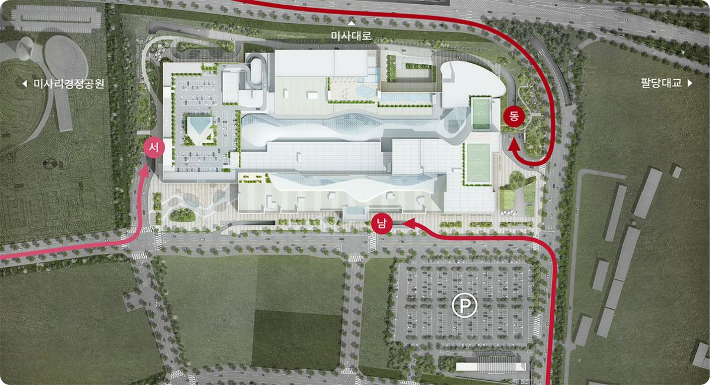

경기도교통정보센터 CCTV로 하남시 주요 진입로 상황을 실시간으로 확인하세요.
미사·강일 생활권에서 서울양양고속도로(올림픽대로 연장)로 올라타는 길은 사실상 선동교차로 나들목과 황산사거리 나들목 두 곳으로 모입니다. 두 나들목 모두 평면 교차로에서 곧바로 고속도로 본선에 합류하는 구조라, 본선이 밀리면 진입 대기가 미사강변대로·미사대로 시내 신호까지 금세 역류합니다. 하남에서 서울로 나가는 아침 정체가 가장 먼저 나타나는 지점입니다.
하남은 한강 남안을 따라 좁고 길게 이어진 지형이라, 아침저녁으로 시가지를 빠져나가는 통로가 방면마다 한두 개로 정해져 있습니다. 그 길목에 차가 몰리면 우회로가 마땅치 않아 회복이 느립니다. 어느 방향으로 출근하든, 집을 나서기 전에 해당 방면의 본선과 진입 램프 상황을 눈으로 확인하면 출발 시각과 경로를 훨씬 빨리 정할 수 있습니다.
방면에 따라 붐비는 방향이 다릅니다. 강동·잠실, 판교·강남은 아침에 하남에서 빠져나가는 흐름이, 구리·남양주는 반대로 아침에 하남으로 들어오는 유입이 더 심합니다. 위 버튼에서 방면을 고르면 그 경로의 길목 CCTV가 순서대로 나옵니다.
| 방면 | 아침 피크 | 저녁 피크 | 비고 |
|---|---|---|---|
| 하남 → 강동·잠실 올림픽대로 · 선동IC~잠실종합운동장 | 07:00–09:00 하남→서울 | 18:00–19:30 귀가 | 선동IC에서 올림픽대로 본선에 합류한 뒤 강일 나들목·천호대교·잠실철교 구간까지 순차 정체. 하남에서 가장 먼저·길게 막히며 강변북로 사고 시 가중. 선동IC 진입 대기는 위 ‘진출입 나들목 병목’ 참고 |
| 하남 → 판교·강남 수도권제1순환 남행 · 하남JC~판교분기점 | 07:30–09:00 하남→판교 | 18:00–19:30 귀가 | 하남JC·서하남IC에서 광암터널·위례·송파IC를 지나 판교분기점까지 순환 본선 정체. 램프가 밀리면 시내 신호까지 역류하고, 판교JC·판교분기점은 경부선 합류로 상시 지체 |
| 구리 → 하남 구리암사대교·순환 남행 | 07:00–08:30 구리→하남 유입 | 18:30–20:00 하남→구리 | 구리암사대교·강동대교에서 하남으로 들어오는 아침 유입이 상습. 역방향(하남→구리)보다 정체가 길게 이어짐 |
| 남양주 덕소·도농 → 하남 미사대교·중앙선 축 | 07:00–09:00 남양주→하남 유입 | 18:00–20:00 하남→남양주 | 미사대교 건너 하남으로 들어오는 아침 정체가 덕소IC까지. 팔당대교 우회 수요까지 겹쳐 역방향이 더 심함 |
※ 평상시의 일반적인 경향입니다. 사고·공사·날씨·행사에 따라 크게 달라지므로 최종 판단은 위 CCTV로 하세요.

혼잡도 여유 · 혼잡 · 만차 3단계. 안내도·데이터 출처 스타필드 하남 공식 주차 안내
| 구간 | 평일 피크 | 주말 피크 | 비고 |
|---|---|---|---|
| 팔당대교남단 (강일 방면) | 07:30–09:00 서울 방면 18:00–19:30 역방향 | 11–13시 상행 16–19시 하행 | 우천·연휴 첫날·단풍철에 가중 |
| 창우지하차도 → 스타필드 | 18:00–20:00 (퇴근·장보기) | 13:00–18:00 특히 14–16시 주차 진입 대기 | 세일·시즌 이벤트·비 오는 주말 오후에 가장 심함 |
※ 일반적인 경향입니다. 실제 상황은 위 CCTV로 확인하세요.
노선 번호는 변동될 수 있으니 지도 앱에서 실시간으로 확인하세요.
전 주차장 무료입니다 (구매 금액과 무관). 트레이더스 홀세일 클럽 이용 시 지하주차장(B1–B3)을, 그 외에는 지상(서측·남측 별관) 또는 지하 주차장을 이용하세요. 진입로는 동·남·서측 세 방향에 있습니다.
출처: 스타필드 하남 공식 주차 안내. 요금 정책은 변경될 수 있습니다.
| 구간 | 평일 피크 | 주말 피크 | 비고 |
|---|---|---|---|
| 미사대교 | 07:00–09:00 서울·강동 방면 18:00–20:00 귀가 | 10–12시 유입 17–19시 복귀 | 올림픽대로·강변북로 정체 시 우회 유입으로 가중 |
| 미사IC 남단 → 조정경기장 | 뚜렷하지 않음 (나들이 성격) | 11:00–14:00 봄·가을 주말에 심화 | 경정 경주일·체육행사·불꽃축제 등 이벤트일에 급증 |
※ 일반적인 경향입니다. 실제 상황은 위 CCTV로 확인하세요.
| 구분 | 평일 | 주말·공휴일 |
|---|---|---|
| 최초 10분 | 무료 | 무료 |
| 소형차 10분당 | 300원 | 400원 |
| 대형차 10분당 | 600원 | 800원 |
| 1일 최대 | 소형 12,000원 · 대형 24,000원 | |
주차장 운영시간은 06:00–20:00입니다. 하남시민은 행정복지센터에서 신청 시 1일 1,000원 감면, 장애인·국가유공자·친환경차·다둥이 등은 전액 감면 대상입니다. 문의 031-790-8703.
출처: 미사경정공원(국민체육진흥공단) 공식 안내. 요금·시간은 변경될 수 있습니다.
팔당대교를 건너 조안면·양수리(두물머리·세미원)·북한강 카페거리로 향하는 길은 하남에서 동쪽 나들이의 사실상 유일한 통로입니다. 편도 2차로 국도에 팔당댐삼거리· 터널 구간·조안IC가 이어져, 주말 오전 나가는 상행과 늦은 오후 돌아오는 하행에 정체가 반복되고 사고가 나면 회복이 느립니다.
현대프리미엄아울렛 스페이스원(남양주 다산)은 하남·서울에서 서울양양고속도로를 타고 미사대교를 건너 남양주IC로 빠지는 경로가 가장 빠릅니다. 주말·세일 기간 오후에는 남양주IC 진출 램프와 왕숙교입구 쪽 진입로에 대기가 생기고, 그 여파로 구리영업소(요금소) 앞 본선까지 느려집니다.
서울양양고속도로의 강일IC~미사대교~덕소IC 구간은 하남에서 북한강·양평· 강원 방면으로 나가는 주말 나들이 차량이 모두 지나는 길입니다. 미사대교는 편도 구간이 길고 진출입이 몰려 있어, 주말 오전 교외로 나가는 상행과 늦은 오후 돌아오는 하행에 정체가 반복됩니다.
스타필드 하남, 미사경정공원·조정경기장, 팔당대교와 고속도로 진출입로 — 하남시에서 정체가 자주 생기는 길목을 한 화면에서 모아 봅니다. 각 구간마다 경기도교통정보센터(GITS)가 공개하는 실시간 CCTV를 붙였고, 그 아래에 요일·시간대별로 어느 시간에 막히는지, 주차장 진입은 어디로 들어가는 게 나은지를 정리했습니다.
내비게이션의 예상 소요시간은 이미 밀리기 시작한 뒤에야 반영되는 경우가 많습니다. 출발 전에 실제 도로 화면을 눈으로 확인하면, 지금 나갈지 30분 뒤에 나갈지, 정문으로 갈지 후문으로 돌지 판단이 훨씬 빨라집니다.
이 사이트는 공공기관이 아니며, 하남에 사는 개인이 만들어 운영합니다. CCTV 영상은 경기도교통정보센터가 공개하는 것을 안내 목적으로 보여줄 뿐이고, 운영비는 광고 수익으로 충당합니다.
하남시는 한강 남안을 따라 좁고 길게 뻗은 지형이라, 서울·경기 각 방향으로 나가는 통로가 몇 개로 정해져 있습니다. 이 통로가 어디서 만나고 갈라지는지 알아두면 한 곳이 막혔을 때 대안을 빨리 고를 수 있습니다.
※ 도로명·사업 일정은 관계 기관 발표에 따라 달라질 수 있습니다.
주요 구간을 통틀어 언제 가장 붐비는지 요약한 표입니다. 어디까지나 평상시 경향이며, 실제 상황은 각 구간 CCTV로 확인하세요.
| 때 | 붐비는 구간·방향 | 상대 혼잡도 |
|---|---|---|
| 평일 07:00–09:00 | 미사대교·팔당대교 서울 방면, 순환고속도로 본선 | 높음 |
| 평일 18:00–20:00 | 스타필드 주변, 미사대교 귀가 방면 | 높음 |
| 토·일 11:00–14:00 | 미사경정공원 진입로, 팔당대교 교외 방면 | 높음 |
| 토·일 14:00–18:00 | 스타필드 주차장 진입(하남대로·창우지하차도) | 매우 높음 |
| 토·일 16:00–20:00 | 팔당대교·순환고속도로 시내 복귀 방면 | 높음 |
| 연휴 첫날 오전 | 팔당대교·고속도로 교외 유출 방면 | 매우 높음 |
| 연휴 마지막날 오후·저녁 | 고속도로 귀경 방면(중부·순환) | 매우 높음 |
| 4월 중순~하순 주말 | 미사경정공원 일대(겹벚꽃) | 매우 높음 |
| 비 오는 주말 오후 | 스타필드 실내 수요 급증 → 주차 진입 적체 | 매우 높음 |
※ 사고·공사·행사·날씨에 따라 크게 달라집니다.
구간에 따라 다릅니다. 카메라 버튼에 LIVE가 표시된 것은 실시간 스트리밍이고, 표시가 없는 것은 약 1분 간격으로 갱신되는 최근 녹화 영상입니다. 어느 쪽이든 현재 도로 상황을 판단하는 데는 충분합니다.
해당 CCTV가 기관 점검 중이거나 일시적으로 송출이 끊긴 상태입니다. 잠시 뒤 새로고침하거나 같은 구간의 다른 카메라를 선택해 보세요. 실시간 스트리밍은 재생 토큰이 만료되면 자동으로 다시 연결합니다.
공개된 교통 통계와 해당 지역의 일반적인 통행 경향을 정리한 것으로, 특정 날짜의 예보가 아닙니다. 사고·공사·행사·날씨에 따라 크게 달라지므로 최종 판단은 실시간 CCTV로 하시기 바랍니다.
네. 스마트폰·태블릿 브라우저에서 그대로 열립니다. 데이터 사용량이 부담되면 실시간(LIVE) 카메라보다 녹화 갱신형 카메라가 전송량이 적습니다.
가능합니다. 모바일 브라우저 메뉴에서 ‘홈 화면에 추가’(아이폰 Safari의 공유 버튼, 안드로이드 Chrome의 ⋮ 메뉴)를 누르면 앱처럼 아이콘이 생깁니다. 설치나 로그인은 필요 없습니다.
실시간(LIVE) 스트리밍은 화질에 따라 분당 수 MB가 나갈 수 있습니다. 셀룰러 데이터로 오래 볼 계획이면 필요한 순간에만 재생하거나, 전송량이 적은 녹화 갱신형 카메라를 이용하세요.
이 사이트는 경기도교통정보센터가 공개하는 CCTV만 임베드합니다. 비공개 카메라이거나 관할이 다른 경우 넣을 수 없습니다. 추가하면 좋을 지점은 제보해 주시면 검토하겠습니다.
실시간 스트리밍도 인코딩·전송 때문에 수 초~십수 초의 지연이 있습니다. 녹화 갱신형은 약 1분 간격입니다. 분 단위 흐름을 읽는 데는 충분하지만, 초 단위 상황(방금 난 사고 등)은 반영이 늦을 수 있습니다.
아래 제보·문의 채널로 알려주시면 확인 후 반영하겠습니다.
이 사이트는 하남 지역 주민이 직접 만들어 운영합니다. 아래 내용은 언제든 환영합니다.
연락 방법